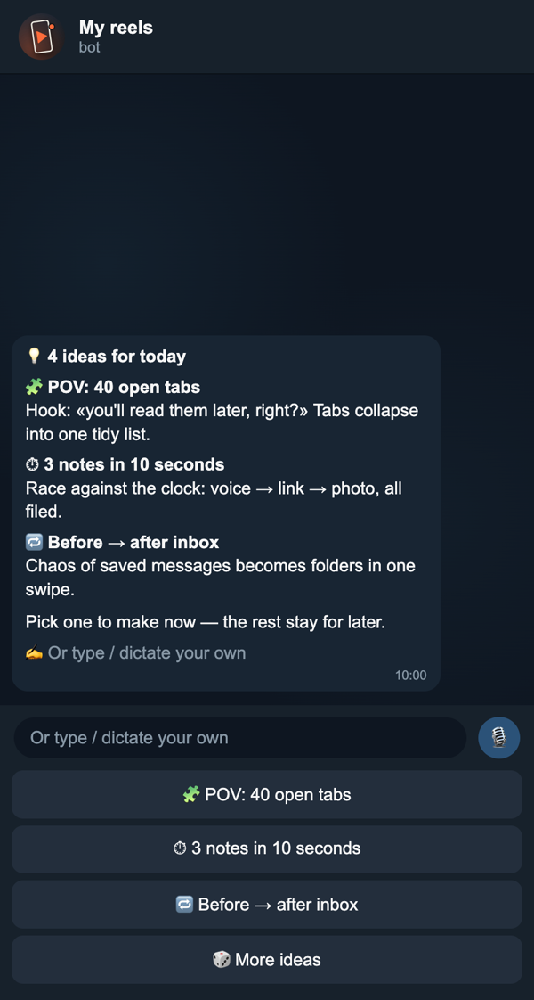
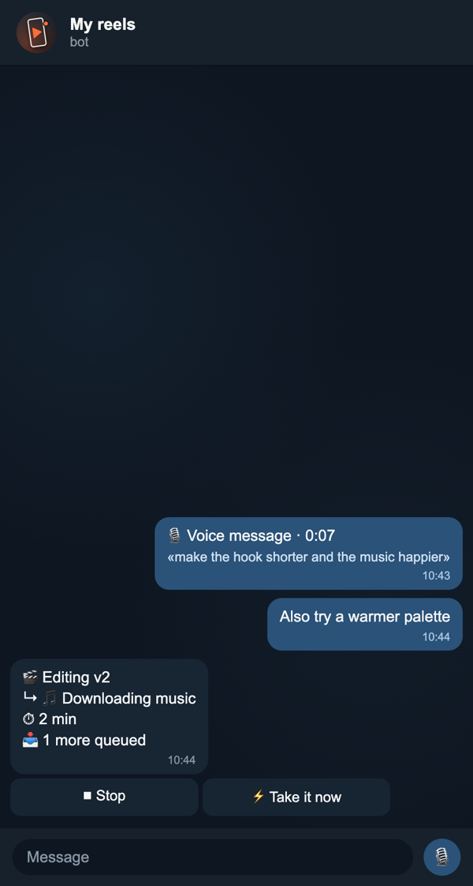
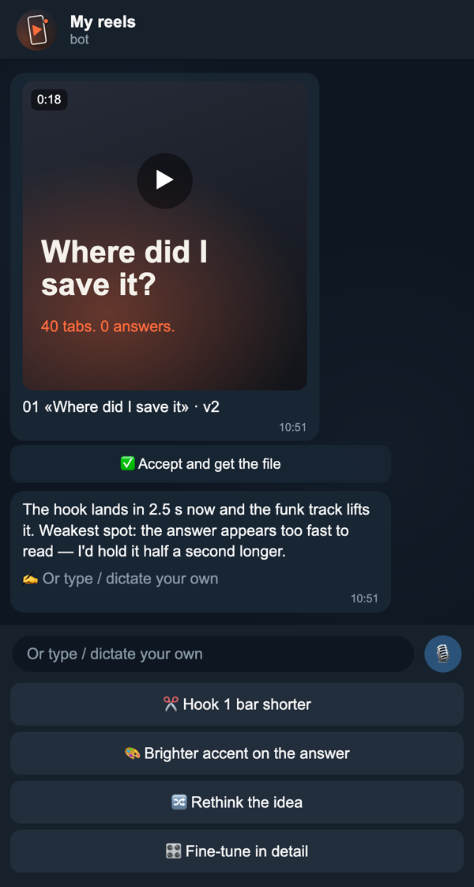
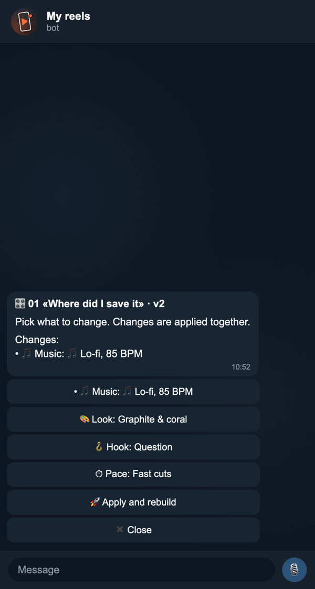

Бот в Телеграме и веб-студия: каждое утро предлагает идеи, монтирует ролики в вашем стиле, принимает правки текстом или голосом. Работает на вашем компьютере и вашей подписке Claude.
Установить за 15 минут →



Больше ничего покупать и настраивать не нужно — остальное поставит сам Claude.
Отмечайте шаги — прогресс сохранится в этом браузере.
Скачайте его с claude.ai/download и войдите своим аккаунтом с подпиской.
Перетащите Claude в «Программы» и откройте.
Наверху приложения переключитесь с «Chat» на «Code». Если попросит выбрать папку — выберите любую, например «Документы».
Install a reels bot for me: https://github.com/mixa-lll/reels-studio — follow SETUP.mdВставьте в поле ввода и нажмите Enter. Claude прочитает инструкцию, проверит код на безопасность и коротко расскажет, что поставит.
Отвечайте кнопками — первая всегда рекомендуемая. Пока идёт установка, ничего делать не нужно (5–10 минут).
Claude попросит об одном действии руками — создать вашего личного бота:
/newbot, затем имя (например, Reelser) и адрес, который заканчивается на bot.Claude пришлёт ссылку вида t.me/ваш_бот?start=…. Откройте её и нажмите Start — бот запомнит вас как владельца и всем остальным будет отвечать «это личный бот».
Бот сразу спросит, о чём будут ваши рилсы: ответьте текстом, голосом или ссылкой на сайт.
В конце Claude предложит включить веб-студию — тот же бот в браузере: отдельный чат на каждый рилс, версии и скачивание, файлы, правила проекта, дизайн-система, доступ для команды. Соглашайтесь — он сам откроет её в браузере.
Чтобы открыть студию с телефона или пригласить коллег, напишите Claude: «сделай ссылку на веб-студию для телефона».
Сам бот бесплатный (открытый код, лицензия MIT). Работает на вашей подписке Claude Pro или Max; ролик с парой правок — это несколько больших задач для Claude, лимиты подписки бот показывает командой /usage.
Бот слушается только владельца, ничего не публикует сам и обновляется только по вашей кнопке. Что именно он делает с сетью и файлами, описано в SECURITY.md — Claude читает его перед установкой и пересказывает вам.
Да, бот работает, пока компьютер включён и не спит. Можно разрешить ему не давать компьютеру засыпать на зарядке. Чтобы бот работал круглосуточно, его можно перенести на недорогой сервер — попросите об этом Claude.
Да. В веб-студии на странице «Доступ» создайте приглашение: человек сможет писать боту из своего Телеграма и заходить в студию. Бот работает с одним человеком за раз, остальным говорит подождать.
Напишите своему Claude во вкладке Code, что случилось, — он знает, как устроен бот (инструкция MANAGE.md), и починит, остановит, перенесёт или удалит его.
Напишите Claude: «удали бота рилсов». Он предложит сохранить ваши ролики и уберёт всё остальное.